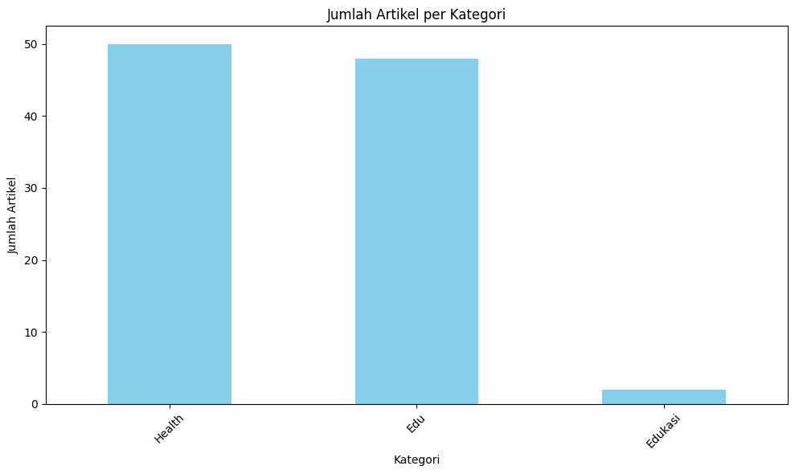

import requests
from bs4 import BeautifulSoup
import pandas as pd
import pandas as pd
import matplotlib.pyplot as plt
import csv
# Membuat variabel list kosong untuk menampung hasil berita
article_result = []
education_article = []
health_article = []
# Maksimal jumlah artikel yang ingin diambil
max_articles = 50
# Iterasi halaman dari 1 hingga 4 (atau sesuai kebutuhan)
for page_num in range(1, 5):
if len(education_article) >= max_articles:
break # Hentikan jika jumlah artikel sudah mencapai batas
url = f"https://indeks.kompas.com/?site=edukasi&page={page_num}"
page = requests.get(url)
soup = BeautifulSoup(page.text, 'html.parser')
articles = soup.find_all('div', class_='articleItem')
for article in articles:
if len(education_article) >= max_articles:
break # Hentikan jika jumlah artikel sudah mencapai batas
article_url = article.find('a', class_='article-link')['href']
title = article.find('h2', class_='articleTitle').text.strip()
category = article.find('div', class_='articlePost-subtitle').text.strip()
date = article.find('div', class_='articlePost-date').text.strip()
# Hanya ambil artikel dengan kategori 'Edu'
if 'Edu' in category:
cPage = requests.get(article_url)
cSoup = BeautifulSoup(cPage.text, 'html.parser')
content_paragraphs = cSoup.find('div', class_='read__content').find_all('p')
content = "\n".join([p.text.strip() for p in content_paragraphs])
# Append the article details to the results list
education_article.append([title, content, date, category])
if len(education_article) >= max_articles:
break # Hentikan jika jumlah artikel sudah mencapai batas
# Iterasi halaman dari 1 hingga 4 (atau sesuai kebutuhan)
for page_num in range(1, 5):
if len(health_article) >= max_articles:
break # Hentikan jika jumlah artikel sudah mencapai batas
url = "https://indeks.kompas.com/?site=health&page={}".format(page_num)
page = requests.get(url)
soup = BeautifulSoup(page.text, 'html.parser')
articles = soup.find_all('div', class_='articleItem')
for article in articles:
if len(health_article) >= max_articles:
break # Hentikan jika jumlah artikel sudah mencapai batas
article_url = article.find('a', class_='article-link')['href']
title = article.find('h2', class_='articleTitle').text.strip()
category = article.find('div', class_='articlePost-subtitle').text.strip()
date = article.find('div', class_='articlePost-date').text.strip()
cPage = requests.get(article_url)
cSoup = BeautifulSoup(cPage.text, 'html.parser')
content_paragraphs = cSoup.find('div', class_='read__content').find_all('p')
content = "\n".join([p.text.strip() for p in content_paragraphs])
# Append the article details to the results list
health_article.append([title, content, date, category])
if len(health_article) >= max_articles:
break # Hentikan jika jumlah artikel sudah mencapai batas
article_result.extend(education_article)
article_result.extend(health_article)
# Convert the results into a DataFrame
df = pd.DataFrame(article_result, columns=['title', 'content', 'date', 'category'])
df
| title | content | date | category | |
|---|---|---|---|---|
| 0 | UNJ Masuk Daftar "Top Kolaborator BRIN" untuk ... | KOMPAS.com - Universitas Negeri Jakarta (UNJ) ... | 15/10/2024 | Edu |
| 1 | Dorong Inovasi Robotika, Ukrida Gelar "Indones... | KOMPAS.com - Universitas Kristen Krida Wacana ... | 15/10/2024 | Edu |
| 2 | Profil Raffi Ahmad, Dipanggil Prabowo Saat Pem... | KOMPAS.com - Artis Raffi Farid Ahmad atau yang... | 15/10/2024 | Edu |
| 3 | Cerita Eunike, Tak Pegang Smartphone 1 Tahun a... | KOMPAS.com - Butuh perjuangan agar bisa lolos ... | 15/10/2024 | Edu |
| 4 | Latar Belakang Pendidikan Sri Mulyani, Jabat M... | \nKOMPAS.com - Sri Mulyani Indrawati dikabarka... | 15/10/2024 | Edu |
| ... | ... | ... | ... | ... |
| 95 | 8 Hal yang Menyehatkan Jantung Memperlambat Pe... | \nKOMPAS.com - Kebiasaan untuk menjaga kesehat... | 11/10/2024 | Health |
| 96 | Bagaimana Cara Kurangi Kolesterol Berlebih? In... | KOMPAS.com-Kolesterol berlebih dalam tubuh bis... | 11/10/2024 | Health |
| 97 | 6 Suplemen Makanan yang Harus Diwaspadai Pende... | KOMPAS.com - Jika Anda menderita diabetes, And... | 11/10/2024 | Health |
| 98 | Bahaya Sleep Apnea Lebih dari Sekedar Mengorok... | KOMPAS.com - Sleep apnea yang ditandai dengan ... | 11/10/2024 | Health |
| 99 | Coba Terapi Akupunktur untuk Kurangi Kadar Kol... | KOMPAS.com- Ada berbagai cara untuk membantu m... | 11/10/2024 | Health |
100 rows × 4 columns
# Hitung jumlah artikel per kategori
category_counts = df['category'].value_counts()
# Tampilkan grafik batang
plt.figure(figsize=(10, 6))
category_counts.plot(kind='bar', color='skyblue')
plt.title('Jumlah Artikel per Kategori')
plt.xlabel('Kategori')
plt.ylabel('Jumlah Artikel')
plt.xticks(rotation=45)
plt.tight_layout()
plt.show()

csv_filename = "crawling_2_kategori.csv"
df.to_csv(csv_filename, index=False, encoding='utf-8')
print(f"Data berita telah disimpan ke {csv_filename}")
Data berita telah disimpan ke crawling_2_kategori.csv
import pandas as pd
# Membaca file CSV menggunakan pandas
df = pd.read_csv('crawling_2_kategori.csv')
df
| title | content | date | category | |
|---|---|---|---|---|
| 0 | UNJ Masuk Daftar "Top Kolaborator BRIN" untuk ... | KOMPAS.com - Universitas Negeri Jakarta (UNJ) ... | 15/10/2024 | Edu |
| 1 | Dorong Inovasi Robotika, Ukrida Gelar "Indones... | KOMPAS.com - Universitas Kristen Krida Wacana ... | 15/10/2024 | Edu |
| 2 | Profil Raffi Ahmad, Dipanggil Prabowo Saat Pem... | KOMPAS.com - Artis Raffi Farid Ahmad atau yang... | 15/10/2024 | Edu |
| 3 | Cerita Eunike, Tak Pegang Smartphone 1 Tahun a... | KOMPAS.com - Butuh perjuangan agar bisa lolos ... | 15/10/2024 | Edu |
| 4 | Latar Belakang Pendidikan Sri Mulyani, Jabat M... | \nKOMPAS.com - Sri Mulyani Indrawati dikabarka... | 15/10/2024 | Edu |
| ... | ... | ... | ... | ... |
| 95 | 8 Hal yang Menyehatkan Jantung Memperlambat Pe... | \nKOMPAS.com - Kebiasaan untuk menjaga kesehat... | 11/10/2024 | Health |
| 96 | Bagaimana Cara Kurangi Kolesterol Berlebih? In... | KOMPAS.com-Kolesterol berlebih dalam tubuh bis... | 11/10/2024 | Health |
| 97 | 6 Suplemen Makanan yang Harus Diwaspadai Pende... | KOMPAS.com - Jika Anda menderita diabetes, And... | 11/10/2024 | Health |
| 98 | Bahaya Sleep Apnea Lebih dari Sekedar Mengorok... | KOMPAS.com - Sleep apnea yang ditandai dengan ... | 11/10/2024 | Health |
| 99 | Coba Terapi Akupunktur untuk Kurangi Kadar Kol... | KOMPAS.com- Ada berbagai cara untuk membantu m... | 11/10/2024 | Health |
100 rows × 4 columns
# Hitung jumlah artikel per kategori
category_counts = df['category'].value_counts()
# Tampilkan grafik batang
plt.figure(figsize=(10, 6))
category_counts.plot(kind='bar', color='skyblue')
plt.title('Jumlah Artikel per Kategori')
plt.xlabel('Kategori')
plt.ylabel('Jumlah Artikel')
plt.xticks(rotation=45)
plt.tight_layout()
plt.show()